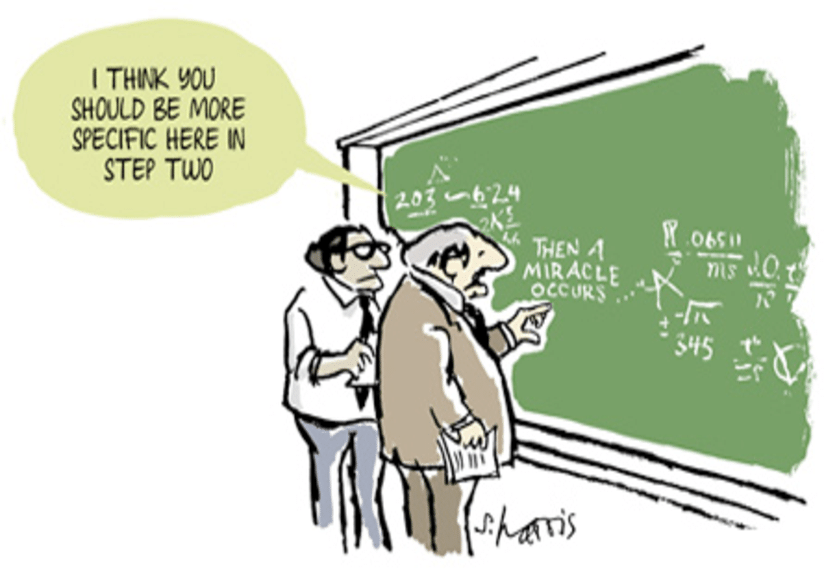

How to Prove It

One of the largest stumbling block in studying mathematics is learning how to prove theorems. In this post, I would share with you 3 of the most commonly used technique with at least one step by step example.
- Direct proof
Perhaps the most intuitive and straightforward way to write proofs.
It goes by “If A, then B” or “A implies B” or mathematically A \(\Rightarrow\) B.
For example:
The sum of two even numbers is also even.
Proof: Let \(x\) and \(y\) be even numbers. Since they are even, by definition they can be rewritten as \(2n\) and \(2m\) respectively. Thus, the sum \(x+y = 2n+2m = 2(n+m)\), which is even number by definition.Third Binomial Formula \[\begin{equation} (a-b)\cdot (a+b) = a^2-b^2 \end{equation}\]
Proof: \[\begin{align} (a-b)\cdot (a+b)&= a\cdot a+a\cdot b-b \cdot a-b \cdot b\\ &= a^2+a \cdot b-b \cdot a-b^2\\ &= a^2-b^2 \end{align}\]Square of odd number is also odd
Proof: Let \(x\) be odd numbers. Since it is odd, by definition it can be rewritten as \(2n+1\). Thus the square product \(x^2 = (2n+1)^2 = 4n^2+4n+1 = 2(2n^2+2n)+1\) which is an odd number by definition.
- Indirect proof or proof by contradiction
An elegant way to write a proof that might seem counter intuitive at first. It is also known as proof by contradiction and reductio ad impossibile. It goes the following steps:
- Assume the proposition to be proved is false
- Then show that the assumption leads to mutually contradictory assertion
- Since the assumption that the proposition is false proved contradictory, then the proposition must be true
For example:
\(\sqrt{2}\) is irrational
Proof:Let there be \(p\) such that \(p^2=2\). If \(p\) is rational, we could write \(p = \frac{m}{n}\) where \(m\) and \(n\) are integers that are not both even. This is then implies that \(m^2=2n^2\) and thus \(m^2\) is even. If \(m^2\) is even, \(m\) must be even too. Because \(m\) is even, \(m^2\) is divisible by 4 which in turn implies that \(n^2\) is even and therefore \(n\) is even. This contradicts with our earlier assumption that \(m\) and \(n\) are integers that are not both even and therefore, a rational \(p\) could not exist.There exist no integers a and b for which \(6a + 3b = 1\)
Proof:Let us first assume that such \(a\) and \(b\) exist. Dividing by 3 gives us: \(2a+b=\frac{1}{3}\) which is a contradiction since \(2a+b\) is an integer but \(\frac{1}{3}\) is not. Therefore there exist no such integers \(a\) and \(b\)
- Mathematical Induction
Mathematical induction is usually taught together with series and sequences. It is a powerful tool to prove series and sequences. It is split into two steps:
- Initial case: prove that the statement holds for 0 and or 1
- Induction step: assume that if the statement holds for some arbitrary natural number \(n\), then prove that it also holds for \(n+1\)
For example:
- [Little Gauss] (Sum of Arithmetic Sequence)
\[\begin{equation}
\sum_{i=1}^n i= \frac{n\cdot(n+1)}{2}
\end{equation}\]
Proof:
Initiation step for \(n = 1\): For the left side: \[\begin{equation} \sum_{i=1}^n i= 1 \end{equation}\] And the right side: \[\begin{equation} \frac{1\cdot(1+1)}{2}=1 \end{equation}\] We obtain the same value from both sides, therefore equation holds for \(n = 1\).
Induction step from \(n\) to \(n+1\): Assume that the statement holds for some arbitrary natural number \(n\), then for \(n+1\), For the left side: \[\begin{equation} \sum_{i=1}^{n+1} i= \frac{(n+1)\cdot(n+2)}{2} \end{equation}\] And the right side: \[\begin{align} \frac{n\cdot(n+1)}{2}+(n+1) &= \frac{n\cdot(n+1)+2\cdot(n+1)}{2}\\ &= \frac{n^2+n+2n+2}{2}\\ &= \frac{n^2+3n+2}{2}\\ &= \frac{(n+1)\cdot(n+2)}{2} \end{align}\] We obtain the same value from both sides, therefore equation holds for \(n+1\). Since both the base case and the induction step have been proved as true, by mathematical induction the statement holds for every natural number \(n\).
More examples will be added in the future